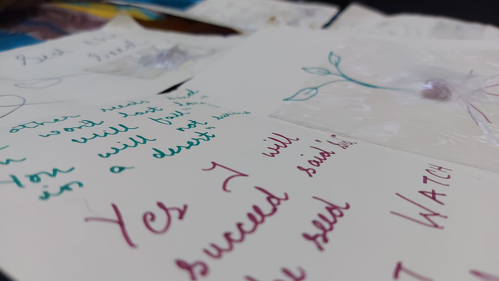
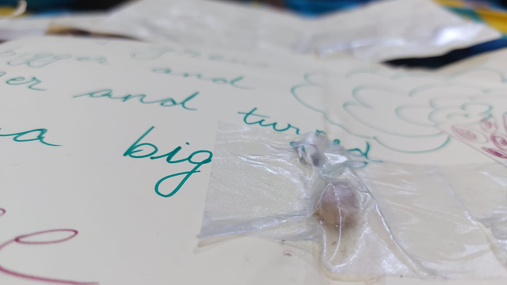

Activities such as arts and crafts related to the environment can have several positive effects on kids,
such as helping them become more aware of existing environmental issues. It can foster a sense of
responsibility for the environment in them.

Seed Story Boards:
Goal: This activity is aimed at developing calligraphic as well as writing skills
in children while educating them on the various types of seeds available in the market and the
methods used to extract and process them.
Materials:
Sketch Pens
Chart Paper
Seed of your choice
Tape
Procedure:
Cut the chart paper into 4-6 pieces.
Drop 2-4 seeds on the first paper and stick it wherever it lands.
Write dialogues and draw a story around the seed.
Continue the story through the next chart paper pieces.
Note: Happy Writing!!! 😉

Layer-By-Layer Animal Cells:
Goal: Learning about the minute details and beauties in nature will develop a sense
of wanting to protect these in kids. This activity can also help kids connect the knowledge gained
in one subject to another.
Materials:
A File
A few clear folders
Scissors (under the supervision of an adult)
Colored Papers
Procedure:
Cut a paper (color of your choice) in an oval shape.
Cut various other colored papers in the shapes found in cells.
Place the oval-shaped paper in a clear folder.
Stick the other pieces scattered in each individual folder, separating them by their shapes.
Place the clear folders in the file.
As you lower each folder, you can see a cell being formed right before your eyes. 🤗